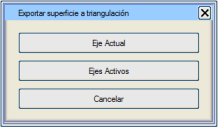
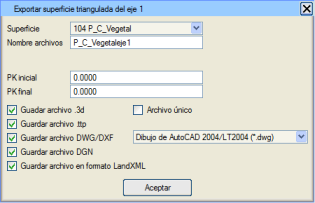
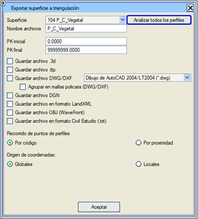

| |
|
YÜZEYİ ÜÇGENLE
|
Bu seçenek, mevcut eksenin veya tüm aktif eksenlerin enkesitlerinden birini kullanarak bir üçgenleme oluşturur. Bu yardımcı programa hem GÜZERGAH PROJELERİ → BOYKESİT → Araçlar'dan hem de ENKESİT DÜZENLEYİCİ'nin ARAÇLAR'ından erişilebilir. GÜZERGAH PROJELERİ'nden erişildiğinde, mevcut eksenle mi yoksa tüm aktif eksenlerle mi çalışılacağı seçilmelidir. İkinci seçenek tercih edilirse, kavşakların ve dönel kavşak bağlantılarının kavşak kolları da, bunları beyan etmiş olan eksenler için üçgenlenir. Üçgenlenecek yüzey (program, eksende mevcut olan tüm yüzeyleri bir açılır menüde gösterir), kaydedilecek dosya adı ve elde edilmek istenen dosya formatları belirtilmelidir. Eğer mevcut eksenin yüzeyinin üçgenlenmesi seçilmişse, eksenin başlangıç ve bitiş KM'leri de belirtilmelidir: 
Not: DGN dosyasını kaydet kutucuğu etkinleştirildiğinde, bir mesh tipi nesneye kaydedilir. Bu seçenekten oluşturulan dosyalar, \ttp\ klasörüne kaydedilecek olan .ttp formatındaki dosyalar hariç, proje klasörünün "TriSup" adlı bir alt klasöründe bir araya getirilmiştir. Yakınlığa göre seçeneği ile, üçgenlerin köşe noktaları, enkesit noktalarına atanan kodlar yerine yakınlığa göre aranır. ENKESİT DÜZENLEYİCİ  > ARAÇLAR > Yüzeyi Üçgenle'den erişildiğinde, [Tüm enkesitleri analiz et] düğmesi belirir. Bu, diyalog kutusunun sunduğu yüzeylerin yalnızca ilk enkesitte görünenler değil, tüm dosyada mevcut olanlar olmasını sağlar: > ARAÇLAR > Yüzeyi Üçgenle'den erişildiğinde, [Tüm enkesitleri analiz et] düğmesi belirir. Bu, diyalog kutusunun sunduğu yüzeylerin yalnızca ilk enkesitte görünenler değil, tüm dosyada mevcut olanlar olmasını sağlar:
|